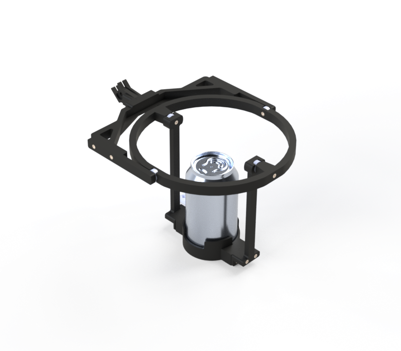

Featured Product
The Iso-Fluidic Inertial Decoupler Mk 2.5 is available in two payload configurations, or as a dual-configuration bundle. Every unit ships complete with a chest-mount harness — only the cradle geometry changes between configurations.

Wine Glass Configuration
A wearable beverage stabilization platform utilizing passive inertial isolation technology.
Designed to maintain wine glass stability during walking, social gatherings, and other dynamic operating conditions.
Includes chest-mount harness. At checkout, select Wine Glass from the configuration dropdown. See Dual Configuration Bundle below to add the 12 oz can cradle.

12 oz Can Configuration
Same passive isolation platform, re-cradled for standard 12 oz (355 mL) beverage cans.
Engineered for tailgates, backyard operations, and other high-vibration social environments.
Includes chest-mount harness. At checkout, select 12 oz Can from the configuration dropdown. See Dual Configuration Bundle below to add the wine glass cradle.
+
Dual Configuration Bundle
One IFID Mk 2.5 unit — not two — shipped with both cradle attachments in the box. Swap between wine glass and 12 oz (355 mL) can support by changing the cradle, no second purchase required.
Ships as a single IFID platform with one harness and two interchangeable cradles (wine glass + 12 oz can). $15 savings versus ordering two single-configuration units separately.